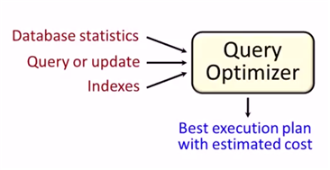

SQL Database
Table of Contents
1 Rational Algebra
1.1 Basic
- select \(\sigma_{P}(r)\)
- project \(\Pi_{S}(r)\)
- rename \(\rho_{x(A_1,A_2,...,A_n)}(r)\)
- union \(r\cup s\)
- difference \(r-s\)
- cartesian-product \(r\times s\)
1.2 Addition
1.2.1 intersection
\[r\cap s = r-(r-s)\]
1.2.2 natual join
\[r\Join s = \Pi_{R\cup S}(\sigma_{r.A_1=s.A_1 \land ...}(r\times s))\]
1.2.3 theta join
\[r\Join_{\theta}s = \sigma_{\theta}(r\times s)\]
1.2.4 devision
\[temp1 \leftarrow \Pi_{R-S}(r)\] \[temp2 \leftarrow \Pi_{R-S}((temp1\times s) - \Pi_{R-S,S}(r))\] \[result = temp1 - temp2\]
1.2.5 aggregation
\[group_{column}\zeta_{aggre\_func(column)}(r)\]
1.3 Modification
- delete \(r\leftarrow r - E\)
- insert \(r\leftarrow r\cup E\)
- update \(r\leftarrow \Pi_{F_1,F_2,...,F_n}(r)\)
2 SQL Language
2.1 Command
2.1.1 CREATE & DROP & ALTER
CREATE DATABASE dbname; USE DATABASE dbname; CREATE TABLE table_name (column_name TYPE Constrains, ... ); DESC table_name; DROP TABLE; ALTER TABLE table_name ADD COLUMN columnName ... ADD PRIMARY KEY (columnName) RENAME TO tableNewName CHANGE COLUMN columnOldName columnNewName TYPE ... MODIFY COLUMN columnName TYPE... DROP COLUMN columnName
2.1.2 INSERT & UPDATE & DELETE
INSERT INTO tableName [(columnName1, columnName2, ...)] VALUES ('value1', 'value2', ...); UPDATE tableName SET columnName1 = 'value1', columnName2 = 'value2' WHERE expr; DELETE FROM tableName WHERE expr;
2.1.3 NOT
When 'NOT' use with 'BETWEEN' and 'LIKE', 'NOT' must follow with 'WHERE' or 'AND/OR'. 'NOT IN' is an exception. "IS NOT NULL" also.
2.1.4 SHOW
SHOW CREATE TABLE tableName; SHOW COLUMNS FROM tableName; SHOW INDEX FROM tableName; SHOW WARNINGS;
UPDATE tableName SET columnName = CASE WHEN column_1 = somevalue1 THEN newValue;
2.1.5 GROUP BY
remove the duplicates
SELECT columnName1, columnName2 FROM tableName GROUP BY columnName2
2.1.6 WITH
Define temporary view
WITH temp_view_name(columnName...) as select statement SELECT ... FROM temp_view_name WHERE ...
2.1.7 RECURSIVE
- CREAT RECURSIVE VIEW
- WITH RECURSIVE
WITH RECURSIVE empl(employee_name, manager_name) as ( SELECT employee_name, manager_name FROM manager UNION SELECT manager.employee_name,empl.manager_name FROM manager, empl WHERE manager.manager_name = empl.employee_name ) SELECT * FROM empl
2.1.8 GRANT & REVOKE
- GRANT statement ON table TO who
- REVOKE statement ON table FROM who
2.1.9 Other Keywords
- REGEXP pattern
- IN ('value1', 'value2', …)
columnName BETWEEN value1 and value2
Equivalent to "columnName > value1 and columnName < value2"
- FIRST, LAST, BEFORE, AFTER, SECOND…
ORDER BY
ORDER BY columnName [ASC/DESC]
- EXISTS, NOT EXISTS are always using in corelated subquery.
UNION
Suppress the duplicates by default. UNION ALL can keep the duplicates.
2.2 Datatype
CHAR, VARCHAR, BLOB, INT, DEC, DATE, DATETIME
2.3 Join
2.3.1 Overview

2.3.2 Inner Join
An inner join is just a cartesian join with some result rows removed by a condition in the query.
2.4 Subquery
2.4.1 Noncorrelated Subquery
A subquery that stands alone and doesn't reference anything from the outer query.
RDBMS will excute inner first, then excute outer.
2.4.2 Correlated Subquery
A subquery that relies on values returned from the outer query.(Slow)
3 Design
3.1 Steps
- Find the one thing need to be described.
- List necessary information about this thing.(Depends on how to use this table)
- Break down the information into pieces .
3.2 Schema Pattern
3.2.1 One to One
3.2.2 One to Many
3.2.3 Many to Many
use junction table.
3.3 Functional Dependency
3.3.1 Definition
\[\forall t,u \in R\ (t[\bar A]= u[\bar A]) \to (t[\bar B] = u[\bar B])\]
3.3.2 Functional Dependency
If we have a functional dependency \(\bar A \to \bar B\)
Trivial
\(\bar B \subseteq \bar A\) and \(\bar A \to \bar A \cup \bar B\) elso.
Nontrivial
\(\bar B \nsubseteq \bar A\)
Completely nontrivial
\(\bar A \cap \bar B = \emptyset\)
3.3.3 Rules For FD
Splitting rule
If \(\bar A \to B_1, B_2\) , then \(\bar A \to B_1\ \bar A \to B_2\)
Combining rule
If \(\bar A \to B_1\ \bar A \to B_2\), then \(\bar A \to B_1, B_2\)
Transitive rule
If \(\bar A \to \bar B\) and \(\bar B \to \bar C\), then \(\bar A \to \bar C\)
3.3.4 Closure of Attributes
Given relation, FDs, set of attributes \(\bar A\), Find all B such that \(\bar A \to B\).
3.4 Multivalued Dependency
3.4.1 Definition
\[\forall t, u\in R:\ t[\bar A] = u[\bar A]\] then \[\exists v \in R:\] \[v[\bar A] = t[\bar A]\] and \[v[\bar B] = t[\bar B]\] and \[v[rest] = u[rest]\]
MVD says, If two tuples have same value for \(\bar A\), then we have every combination for \(\bar B\) value and the rest.
| tuple | \(\bar A\) | \(\bar B\) | rest |
|---|---|---|---|
| t | \(\bar a\) | \(\bar b_1\) | \(\bar r_1\) |
| u | \(\bar a\) | \(\bar b_2\) | \(\bar r_2\) |
| v | \(\bar a\) | \(\bar b_1\) | \(\bar r_2\) |
Note that, there aslo must exist w:
| w | \(\bar a\) | \(\bar b_2\) | \(\bar r_1\) |
Trivial MVDs
\(\bar B\subseteq \bar A\) or \(\bar A\cup \bar B = all\ attributes\) always satisfied MVD. E.g. for first case, Consider \(\bar{AB} \twoheadrightarrow \bar B\).
Nontrivial
otherwise.
3.4.2 Rules For MVD
MVD is a tuple-generating dependency.
- FD is a MVD
Intersection rule
If \((\bar A\twoheadrightarrow \bar B) \land (\bar A\twoheadrightarrow \bar C)\) , then \(\bar A\twoheadrightarrow \bar B\cap \bar C\) .
Transitive rule
If \((\bar A\twoheadrightarrow \bar B) \land (\bar B\twoheadrightarrow \bar C)\) , then \(\bar A\twoheadrightarrow \bar C - \bar B\) .
4 Normalization
4.1 1-NF
Data in your column is atomic if it's been broken down into the smallest pieces that you need.
Rule 1: A column with atomic data can't have several values of the same type of data in that column. One example obeys the rule 1:
food_name ingredients bread flour, milk, egg, yeast, oil salad lettuce, tomato, cucumber Rule 2: A table with atomic data can't have multiple columns with the same type of data.
teacher student1 student2 Ms.Mary Joe Ron
4.2 2-NF
- Rule 1: Be in 1NF
- Rule 2: Have no partial functional dependencies.
4.3 3-NF
- Rule 1: Be in 2NF
- Rule 2: Have no transitive dependencies.
4.4 Boyce-Codd Normal Form(BCNF, 3.5-NF)
FD leads to the BCNF.
Definition Relation R with FDs is in BCNF if:
For each nontrivial \(\bar A\to B\), \(\bar A\) is a key.
4.4.1 Validation Example
- R(A, B, C, D)
- FDs: \(AC\to D,\ D\to A,\ D\to C,\ D\to B\)
- For every \(\bar{left}\) can determine all the attributes.
4.5 4-NF
Definition
Relation R with MVDs is in 4NF if:
For each nontrivial \(\bar A\twoheadrightarrow \bar B\), A is a key.
4NF is in BCNF.
5 Subclasses
5.1 Complete vs. Incomplete(Partial)
Complete: Every object is in at least one subclass.
5.2 Overlapping vs. Disjoint(Exclusive)
Overlapping: One object is in two+ subclasses.
5.3 How to design?
3 choices:
- Subclass relations contain superclass key + specialized attrs
- Subclass relations contain all attributes
- One relation containing all superclass + subclass attrs
Best translation may depend on properties:
- Heavily overlapping -> design 3
- Disjoint, complete ->design 2
Examples:
@startuml title Subclass Example Superclass <|-- Subclass1 Superclass <|-- Subclass2 class Superclass{ k PK A } class Subclass1{ B } class Subclass2{ C } @enduml
- S(_K_, A), S1(_K_, B), S2(_K_, C)
- S(_K_, A), S1(_K_, A, B), S2(_K_, A, C)
- S(_K_, A, B, C)
6 Constraints
6.1 Motivation
Constrain allowable database states.(static)
6.2 Syntax
Major keywords: PK, FK, UNIQUE, CHECK
Examples:
Create ... { columnName type CHECK (columnName IN ('value1', 'value2')); } ADD CONSTRAINT CHECK columnName > 1; CHECK 'A' = SUBSTRING(columnName, 1, 1);
6.3 Foreign Key
6.3.1 Facts
- A FK can have different name than the parent key.
- FK values can be NULL.
- We can make sure a FK contains a meaningful value by using a constraint .
- The FK doesn't have to be the primary key of the parent table, but it must be unique.
6.3.2 Creation
CREATE TABLE tableName ( ... columnName TYPE NOT NULL, [CONSTRAINT constraint_name,] FOREIGN KEY (foreign_key_name) REFERENCES parent_tableName (parent_columnName) )
You can name constraint_name and foreign_key_name whatever you like.
7 Triggers
7.1 Motivation
- To enforce constraints(Dynamic)
- Move logic from apps into DBMS
7.2 Usage
7.2.1 Event-Condition-Action Rules
When event occurs, check condition; if true, do action.
- syntax
CREATE TRIGGER trigger_name [BEFORE|AFTER|INSTEAD OF] events ,[referencing-variables] [For Each Row] [when (condition)] ,action
- events
INSERT ON T DELETE ON T UPDATE [OF C1,...,Cn] ON T
- [For Each Row]
Determines whether the trigger is row-level or statement-level
referencing-variables
DEPENDS ON [For Each Row] OLD row AS var NEW row AS var OLD table AS var NEW table AS var
condition
In when or where clause depends on the SQL Implementation.
8 Indexes
8.1 Usage
Different between full table scans and immediate location of tuples.
8.2 Underlying Data Structures
Balanced trees (B tree, B+ tree)
When uses ">, <, >=, <=" in query.
Hashtable
When uses "=" in query.
- skiplist
8.3 SQL Syntax
CREATE INDEX IndexName ON T(A1,A2...) CREATE UNIQUE INDEX ... DROP INDEX IndexName
8.4 Downsides
- Extra space
- Index creation
Index maintenance(Important)
When updates database, indexes will also be updated.
8.5 Upsides
Benefits depends on:
- Data distributions
- Query vs. update load
- Size of table(and possibly layout)
8.6 Physical Design Advisors
- Input (database statistics and workload)
- Output (recommended indexes)

9 Transaction
9.1 Motivation
- Concurrent database access
- Resilience to system failures
9.2 Properties
A(Atomicity)
Each transaction is "all-or-nothing", never left half done.
C(Consistency)
Can assume all constrants hold when transaction begins. Must guarantee all constraints hold when transaction ends. Serializability -> constraints always hold
I(Isolation)
Serializability: Execution must be equivalent to some sequential(serial) order of all transactions.(e.g. T9, T1, T2, T3, …)
D(Durability)
If system crashes after transaction commits, all effects of transaction remain in database.
9.3 Isolation levels
9.3.1 read uncommitted: written by an uncommitted transaction
9.3.2 read committed(nonrepeatable reads): an item read multiple times cannot change values
T1: Update Student Set GPA=(1.1)*GPA T2.S1: Select AVG(GPA) From Student T2.S2: Select MAX(GPA) From Student
T2.S1 may excute before T1, T2.S2 may excute after T1. The GPAs in S1 and S2 are different, leads to a nonrepatable reads violation.
9.3.3 Repeatable Read
- some system uses next-key locking to solve the phantom read
9.3.4 Serializable
- solves the phantom read by forcing transactions to be ordered(low performance)
9.3.5 Summary
| levels | dirty reads | nonrepeatable reads | phantoms | locking reads |
|---|---|---|---|---|
| Read Uncommitted | Y | Y | Y | N |
| Read Committed | N | Y | Y | N |
| Repeatable Read | N | N | Y | N |
| Serializable | N | N | N | Y |
10 SQLAlchemy
10.1 Core
10.1.1 create_engine(…, echo=True)
10.1.2 Types
- Generic
SQLAlchemy Python SQL BigInteger int BIGINT Boolean bool BOOLEAN or SMALLINT Date datetime.date DATE(SQLite: STRING) DateTime datetime.datetime DATETIME(SQLite: STRING) Enum str ENUM or VARCHAR Float float or Decimal FLOAT or REAL Integer int INTEGER Interval datetime.timedelta INTERVAL or DATE from epoch LargeBinary byte BLOB or BYTEA Numeric decimal.Decimal NUMERIC or DECIMAL Unicode unicode UNICODE or VARCHAR Text str CLOB or TEXT Time datetime.time DATETIME - SQL standard
See module sqlalchemy.types. The standard types are in all capital letters.
- Vendor specific
See module sqlalchemy.dialects
- User defined
10.1.3 Metadata
Think metadata as a kind of catalog of Table objects with optional information about the engine and the connection. Read operations on metadata object are thread-safe, however, table construction is not completely thread-safe.
10.1.4 Tables
- Using user-defined Table objects
Table objects are initialized in SQLAlchemy Core in a supplied MetaData object by calling the Table constructor with the table name and metadata; any additional argu‐ ments are assumed to be column objects.
- Using declarative classes that represent your tables(ORM)
- Inferring them from the database
10.1.5 Columns
Column objects represent each field in the table. The columns are constructed by calling Column with a name, type, and then arguments that represent any additional SQL constructs and constraints
users = Table('users', metadata, Column('user_id', Integer(), primary_key=True), Column('username', String(15), nullable=False, unique=True), Column('email_address', String(255), nullable=False), Column('phone', String(20), nullable=False), Column('password', String(25), nullable=False), Column('created_on', DateTime(), default=datetime.now), Column('updated_on', DateTime(), default=datetime.now, onupdate=datetime.now))
- useful arg: primary_key, nullable, unique, default, onupdate
10.1.6 Keys and Constraints
- PrimaryKeyConstraint
- UniqueConstraint
- CheckConstraint
- ForeignKeyConstraint
PrimaryKeyConstraint('user_id', name='user_pk') UniqueConstraint('username', name='uix_username') CheckConstraint('unit_cost >= 0.00', name='unit_cost_positive') ForeignKeyConstraint(['order_id'], ['orders.order_id'])
10.1.7 Index
from sqlalchemy import Index Index('ix_cookies_cookie_name', 'cookie_name') Index('ix_test', mytable.c.cookie_sku, mytable.c.cookie_name)
10.1.8 SQL
- Insert
single insert
ins = cookies.insert().values( # ins = insert(cookies).values( <= the same cookie_name="chocolate chip", cookie_recipe_url="http://some.aweso.me/cookie/recipe.html", cookie_sku="CC01", quantity="12", unit_cost="0.50") print(str(ins)) # print sql statement ins.compile().params # show arguments in sql statement result = connection.execute(ins) # executing the insert statement result.inserted_primary_key
multiple inserts
result = connection.execute(ins, inventory_list)
- Query
The select method expects a list of columns to select; however, for convenience, it also accepts Table objects and selects all the columns on the table.
s = select([cookies]) rp = connection.execute(s) results = rp.fetchall()
- ResultProxy
ResultProxy makes handling query results easier by allowing access using an index, name, or Column object.
first_row = results[0] # get first row first_row[1] # access column by index first_row.cookie_name # access column by name first_row[cookies.c.cookie_name] # access column by Column object
iterating over a ResultProxy
rp = connection.execute(s) for record in rp: print(record.cookie_name)
- other methods: first, fetchone, scalar, keys
- Order By
from sqlalchemy import desc s = select([cookies.c.cookie_name, cookies.c.quantity]).order_by(desc(cookies.c.quantity)).limit(2)
- Built-In SQL Functions
s = select([func.sum(cookies.c.quantity)])
count
s1 = select([func.count(cookies.c.cookie_name)]) s2 = select([func.count(cookies.c.cookie_name).label('inventory_count')])# rename record1 = connection.execute(s).first() record2 = connection.execute(s).first() print(record1.count_1) # default: <func_name>_<position> print(record2.inventory_count)
- Filtering
select([cookies]).where(cookies.c.cookie_name == 'chocolate chip')
ClauseElements
between(cleft, cright), concat(col_two), distinct(), in_([list]), notin_([list]), is_(None), isnot(None), contains(string), endswith(string), like(string), startswith(string), ilike(string)
- use and_, or_, not_ inside where clauses
- ResultProxy
- Update
from sqlalchemy import update u = update(cookies).where(cookies.c.cookie_name == "chocolate chip") u = u.values(quantity=(cookies.c.quantity + 120)) # u = u.values({"quantity": 1, "cookie_name": "bear"}) # multi column update result = connection.execute(u) print(result.rowcount)
- Delete
from sqlalchemy import delete u = delete(cookies).where(cookies.c.cookie_name == "dark chocolate chip") result = connection.execute(u) print(result.rowcount)
- Join
columns = [ orders.c.order_id, users.c.username, users.c.phone, cookies.c.cookie_name, line_items.c.quantity, line_items.c.extended_cost, ] cookiemon_orders = select(columns) cookiemon_orders = cookiemon_orders.select_from( orders.join(users).join(line_items).join(cookies)).where( users.c.username == 'cookiemon')
- Alias
manager = employee_table.alias('mgr') # SELECT employee.name # FROM employee, employee AS mgr # WHERE employee.manager_id = mgr.id AND mgr.name = ?
- GroupBy
columns = [users.c.username, func.count(orders.c.order_id)] all_orders = select(columns) all_orders = all_orders.select_from(users.outerjoin(orders)) all_orders = all_orders.group_by(users.c.username)
- Raw Queries
from sqlalchemy import text result = connection.execute("select * from orders").fetchall() stmt = select([users]).where(text("username='cookiemon'")) print(connection.execute(stmt).fetchall())
10.1.9 Exceptions
Common exceptions: AttributeError, IntegrityError… in sqlalchemy.exc module
10.1.10 Transactions
transaction = connection.begin() connection.execute(...) try: transaction.commit() except IntegrityError as error: transaction.rollback() print(error)
10.1.11 Reflection
metadata.reflect(bind=engine) metadata.tables.keys() # show tables table_obj = metadata.tables["table_name"]
10.2 ORM
10.2.1 User-defined tables
The declarative_base combines a metadata container and a mapper that maps our class to a database table.
A proper class for use with the ORM must do four things:
- Inherit from the
declarative_baseobject. - Define
__tablename__, which is the table name to be used in the database. - Contain one or more attributes that are Column objects.
- Ensure one or more attributes make up a primary key.
Base = declarative_base() class Cookie(Base): __tablename__ = 'cookies' cookie_id = Column(Integer(), primay_key=True) ... Cookie.__table__ # same as the table object using Table(...)
- Constraints
use
__table_args__to specify constraints like Table constructor in core section.class SomeDataClass(Base): __tablename__ = 'somedatatable' __table_args__ = (ForeignKeyConstraint(['id'], ['other_table.id']), CheckConstraint(unit_cost >= 0.00, name='unit_cost_positive'))
- FK
from sqlalchemy import ForeignKey, Boolean from sqlalchemy.orm import relationship, backref class Order(Base): __tablename__ = 'orders' order_id = Column(Integer(), primary_key=True) user_id = Column(Integer(), ForeignKey('users.user_id')) shipped = Column(Boolean(), default=False) user = relationship("User", backref=backref('orders', order_by=order_id)) # one(user) to many(orders) relationship
This relationship also establishes an orders property on the User class via the backref keyword argument, which is ordered by order_id.
The relationship directive needs a target class for the relationship, and can optionally include a back reference to be added to target class.
- Persistance
Base.metadata.create_all(engine)
10.2.2 Relationship
10.2.3 Session
The session wraps a database connection via an engine, and provides an identity map for objects that you load via the session or associate with the session.
A session also wraps a transaction, and that transaction will be open until the session is committed or rolled back.
- States
- Transient: The instance is not in session, and is not in the database
- Pending: The instance has been added to the session with add(), but hasn’t been flushed or committed.
- Persistent: The object in session has a corresponding record in the database.
- Detached: The instance is no longer connected to the session, but has a record in the database.
- Init
from sqlalchemy import create_engine from sqlalchemy.orm import sessionmaker engine = create_engine('sqlite:///:memory:') Session = sessionmaker(bind=engine) # generate factory function session = Session() # establish the connection # or with engine.connect() as conn: session = Session(bind=conn)
10.2.4 SQL
- Insert
- add->commit
cc_cookie = Cookie(...) session.add(cc_cookie) print(cc_cookie.cookie_id) # None session.commit() print(cc_cookie.cookie_id) # auto generated no
- add->flush
Use flush if you are going to do additional work with the objects after inserting them.
A flush is like a commit; however, it doesn’t perform a database commit and end the transaction. The data objects are still associated with the session.
cookie1 = Cookie(...) cookie2 = Cookie(...) session.add(cookie1) session.add(cookie2) session.flush() print(cookie1.cookie_id) # some number
after flush, the records in session are changed.
- bulk_save_objects
performance benefits:
- Relationship settings and actions are not respected or triggered.
- The objects are not connected to the session.
- Fetching primary keys is not done by default.
- No events will be triggered.
session.bulk_save_objects([cookie1,cookie2]) session.commit()
- after bulk_save_objects, the state is Transient. use
inspectto see the object state
from sqlalchemy import inspect inspect(cookie1) inspect(cookie2) for state in ['transient', 'pending', 'persistent', 'detached']: print('{:>10}: {}'.format(state, getattr(insp, state)))
- add->commit
- Query
cookies = session.query(Cookie).all()
fetch method: all, first, one, scalar
for cookie in session.query(Cookie): print(cookie)
The iterable version is more memory efficient.
- Choose columns
print(session.query(Cookie.cookie_name, Cookie.quantity).first())
- Ordering
for cookie in session.query(Cookie).order_by(desc(Cookie.quantity)): print('{:3} - {}'.format(cookie.quantity, cookie.cookie_name))
- Limiting
query = session.query(Cookie).order_by( Cookie.quantity)[:2] # slices the return list. ineffecient. query = session.query(Cookie).order_by(Cookie.quantity).limit(2) print([result.cookie_name for result in query])
This runs the query and slices the returned list. This can be very ineffecient with a large result set.
- Built-in functions
from sqlalchemy import func inv_count = session.query(func.sum(Cookie.quantity)).scalar() rec_count = session.query( func.count(Cookie.cookie_name).label('inventory_count')).first() # rename
- Filtering
record = session.query(Cookie).filter( Cookie.cookie_name == 'chocolate chip').first() record = session.query(Cookie).filter_by(cookie_name='chocolate chip').first() query = session.query(Cookie).filter(Cookie.cookie_name.like('%chocolate%'))
- Conjunctions
query = session.query(Cookie).filter( Cookie.quantity > 23, Cookie.unit_cost < 0.40) # default and conjunctions from sqlalchemy import and_, or_, not_ query = session.query(Cookie).filter( or_(Cookie.quantity.between(10, 50), Cookie.cookie_name.contains('chip')))
- Choose columns
- Update
query = session.query(Cookie) cc_cookie = query.filter(Cookie.cookie_name == "chocolate chip").first() cc_cookie.quantity = cc_cookie.quantity + 120 # or query.update({Cookie.quantity: Cookie.quantity - 20}) session.commit() print(cc_cookie.quantity)
- Delete
- Join
query = session.query(Order.order_id, User.username, User.phone, Cookie.cookie_name, LineItem.quantity, LineItem.extended_cost) query = query.join(User).join(LineItem).join(Cookie) results = query.filter(User.username == 'cookiemon').all()
- GroupBy
query = session.query(User.username, func.count(Order.order_id)) query = query.outerjoin(Order).group_by(User.username)
- Transaction
Transaction begins after session.commit()
10.2.5 Exceptions
- MultipleResultsFound
This exception occurs when we use the .one() query method, but get more than one result back.
- DetachedInstanceError
This exception occurs when we attempt to access an attribute on an instance that needs to be loaded from the database, but the instance we are using is not currently attached to the database.
10.2.6 Reflection
from sqlalchemy.ext.automap import automap_base Base = automap_base() # use automap_base instead of declarative_base Base.prepare(engine, reflect=True) Base.classes.keys() # show ORM classes User = Base.classes.User Order = Base.classes.User
10.3 Alembic
10.3.1 Configuring the Environment
Use alembic init migrations to create a migrations environment.
├── migrations │ ├── env.py │ ├── README │ ├── script.py.mako │ └── versions └── alembic.ini
- set sqlalchemy.url in alembic.ini
modify env.py to point metadata which is an attribute of the
Baseinstancefrom app.db import Base target_metadata = Base.metadata
10.3.2 Building Migrations Manually
alembic revision -m "rev msg": create a migration file in the alembic/versions/ subfolder- rewrite
upgrade=/=downgrademethod within the migration file alembic upgrade head: upgrade database to the highest alembic migration
10.3.3 Autogenerating a Migration
alembic revision --autogenerate -m "Added some model"alembic upgrade head
10.3.4 Version Control
alembic currentsee current revisionalembic historyshow historyalembic downgrade revisionIDalembic stamp revisionIDmark revisionID as the current migration level, used to skip a migration or restore a database
10.3.5 Generating SQL
alembic upgrade org_revision:target_revision --sql